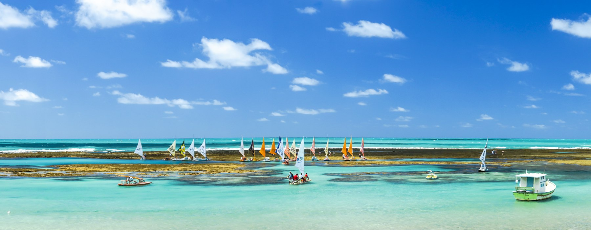
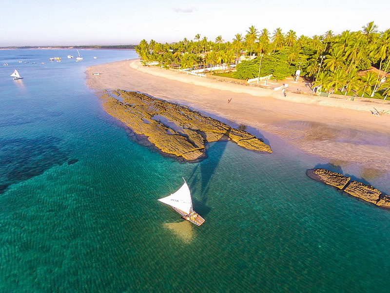

Porto de Galinhas
Porto de Galinhas é uma praia localizada no distrito homônimo, pertencente ao município de Ipojuca, no estado de Pernambuco, Brasil. A região possui piscinas de águas claras e mornas formadas entre corais, além de estuários, mangues, areia branca e coqueirais.[1] Toda a região é muito frequentada por turistas e surfistas de diversas nacionalidades, tendo sido eleita pela revista Viagem e Turismo, da Editora Abril, como a "Melhor Praia do Brasil" por dez vezes consecutivas.[2] Entre Porto de Galinhas e Praia dos Carneiros (outro importante destino turístico pernambucano) está situada a Ilha de Santo Aleixo.[3] Já no sentido norte estão localizadas as praias de Muro Alto, formada por uma extensa barreira de recifes, e de Calhetas, local do descobrimento do Brasil pelo navegador espanhol Vicente Yáñez Pinzón em janeiro de 1500, muito procurada para a prática de tirolesa.[4] Há dias ensolarados em todos os meses do ano, mas os meses de abril, maio, junho e julho são os mais chuvosos no litoral de Pernambuco, sendo junho o mês com os maiores índices pluviométricos. A melhor época vai de setembro a fevereiro, e os meses com mais dias de sol são outubro, novembro e dezembro.[5]
História
Inicialmente, a praia era chamada de Porto Rico, devido à sua abundância em pau-brasil. No auge da escravidão no Brasil, era o principal ponto de comércio de escravos ilegais no nordeste brasileiro, que muitas vezes chegavam escondidos embaixo de engradados de galinhas-d'angola. A chegada dos escravos ilegais ao porto costumava ser anunciada pela frase tem galinha nova no porto! Desta forma, a praia de Porto Rico ficou conhecida como Porto de Galinhas. A partir do início da década de 1990, tornou-se um polo turístico. Isto gerou danos à vida marinha na região, obrigando o controle da atividade dos turistas a partir de 2014.
Dicas de Porto de Galinhas

Porto de Galinhas, é um dos hits da região e ponto de partida dos jangadeiros, que levam até as piscinas naturais onde os peixinhos estão. Nas piscinas a beleza da natureza fala alto e faz entender por que Porto é esse sucesso todo. Na Praia de Muro Alto, outro local importante para incluir no roteiro, é a calmaria que impressiona. A praia parece uma lagoa e quem mergulha em suas águas corre sério risco de não querer voltar para casa. Porto tem praias diferentes, com elementos distintos, porém uma beleza singular. No verão, o destino fica lotado e concorrido, fato que afasta muita gente e intimida o bolso. Porto de Galinhas vive duas realidades: uma dos resorts glamurosos e outra das pousadas. A localização, contudo, não intefere na diversão e no visual - para onde quer que se olhe a paisagem é de tirar o fôlego. Para além do mar, o lugar oferece passeios variados, lojinhas ótimas para comprar artesanato, um povo acolhedor e a culinária arretada típica do estado. Nos cardápios, com opções para todos os gostos, valorizam-se a proximidade com o mar e os sabores do sertão. Difícil não agradar!